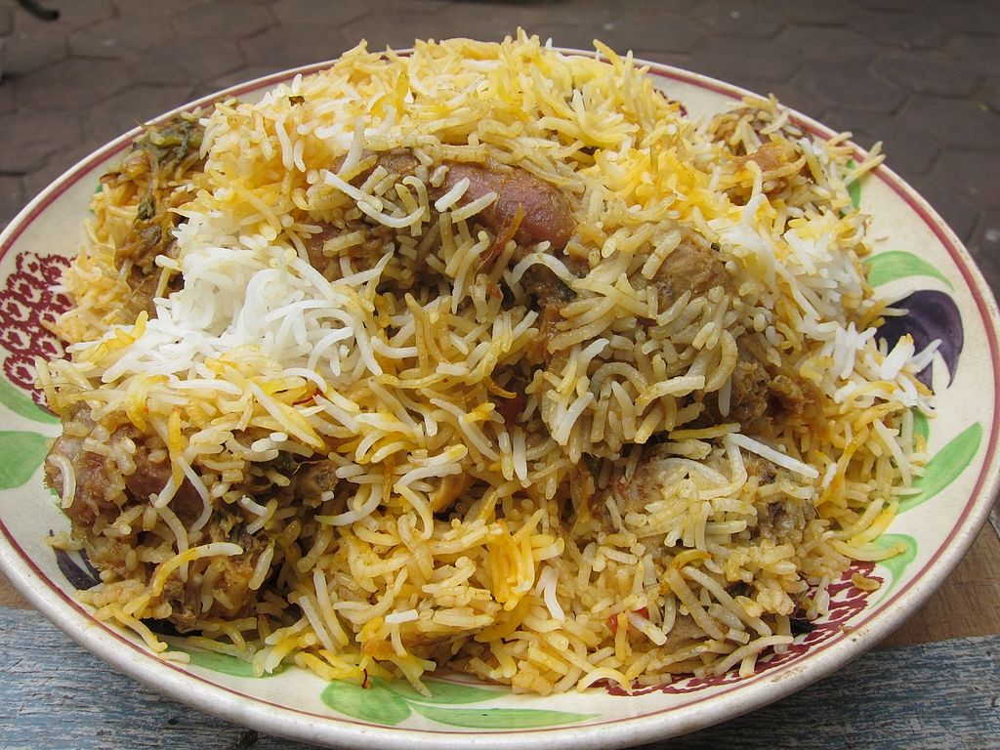

Biryani
Biryani is popular throughout the Indian subcontinent.Biryani is a mixed rice dish originating among the Muslims of the Indian subcontinent.It is made with Indian spices, rice, and meat usually that of chicken, goat, lamb, prawn, fish, and sometimes, in addition, eggs or vegetables such as potatoes in certain regional varieties.Another theory claims that the dish was prepared in India before the first Mughal emperor Babur conquered India.The 16th-century Mughal text Ain-i-Akbari makes no distinction between biryanis and pilaf (or pulao): it states that the word "biryani" is of older usage in India.[17] A similar theory, that biryani came to India with Timur's invasion, appears to be incorrect, because there is no record of biryani having existed in his native land during that period.
Poori

Puris are prepared with wheat flour, either atta (whole wheat flour) or sooji (coarse wheat flour). In some recipes, ajwain, cumin seed, spinach, or fenugreek seeds are added to the dough. The dough is either rolled out in a small circle or rolled out and cut out in small circles, then deep fried in ghee or vegetable oil. While deep frying, puris puff up like a round ball because moisture in the dough changes into steam which expands in all directions. When they are golden-brown in color, they are removed and either served hot or saved for later use (as with the snack food pani puri). Rolled puris may be pricked with a fork before deep frying to make flat puris for chaat like bhel puri. A punctured puri does not puff when cooked because the steam escapes as it cooks.A variant of puri is bhatoora, which is three times the size of a puri and served with chholey (spicy chick peas). It often constitutes a full meal. (See chole bhature). Bhatoora bread is with yeast and puri bread made from unleavened dough